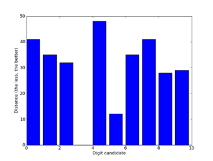

CAPTCHA is widely used to distinguish humans from robots, mainly preventing improper automations. However, sometimes we really need some automation which actually won’t throw much burden to the server. An example is to check the status of an EMS (Express Mail Service, an “official” courier service provider hosted by China Post) package every half an hour. This article will illustrate how to recognize the CAPTCHA with basic image processing and machine learning techniques.
The CAPTCHA of EMS can be fetched from http://www.11183.com.cn/emsService/ems/rand. It usually looks like , with colorful digits and clutter background. Note there is no distortion on foreground digits, and the digits usually appear in relatively fixed positions. This makes our recognition a lot easier. The recognition process can be divided into three stages, image binarization, digit splitting, and digit recognition.
Image binarization means making the chromatic image into black and white. The usual approach is first turning the image into gray-scale, computing a gray-scale threshold, and then binarizing the image with the threshold. The first and third steps are fairly easy, while the threshold computation looks harder but has a mature algorithm named Otsu’s method proposed in 1979. MATLAB (with image processing toolbox) has a good implementation of the algorithm, and has a function named im2bw for the overall process of image binarization. The output binary image of the sample CAPTCHA is like . Perfect!
Now the problem gets a lot more promising. Splitting the digits gets trivial base on such binary images. But to accelerate the development progress, we measure the positions of each digits manually, and split digits by such fixed positions. This approach works, although with some errors (in one pixel or two). The splitting results are as following images show.

After looking into the split digits, some problems emerge. Take the digit 3 as an example like the following images. We can notice the sizes, relative positions (of the digit in the frame) are not exactly the same. And there are sometimes holes or black blobs from binarization. This makes digit recognition harder, i.e. exact matching will not work any more. There are two intuitive approaches to solve the problem. One is normalization, i.e. using image processing techniques to calibrate size and position of both training and testing images, and using erosion and dilation to eliminate holes/blobs before exact matching. And the other approach is to collect lots of training data, to cover most variances of each digit.


Which way is better really depends on the data. If there are lots of factors affecting the digits’ appearance, model-driven calibration is much more efficient, without needing to collect/generate enormous possible training data. But if the data are fairly simple and nearly the same, like the case here, collecting enough training data requires much less efforts, comparing to designing, implementing the calibration model and debugging. Here we only collect 20 sample CAPTCHAs with one line of PowerShell script, which is proved to work perfectly in practice.
To deal with the variance of the data while maintaining a least effort in implementing the model, we adopt a K Nearest Neighbor approach. That is, we compare the testing image with every image in the training set, choose the “most similar” one in the sense of Hamming Distance, and adopt the label of that “most similar” image as the recognition result. With like 30 lines of C# code (thanks to LINQ, we can write compact codes comfortably), we got perfect recognition results on our testing set. For the sample CAPTCHA, the program provides 761803, which is exactly the correct answer.
Digging more deeply, this model is actually very discriminative. Following figure shows the distance of each digit candidate to an image of “3”. It’s easy to see the least distances of other digits are obviously larger than that of 3, which is actually 0.

There are two inspirations from this small “project”. One is, “large-scale” data can really replace sophisticated algorithms (like this article in Wired says. I add quotes because the scale of data only needs to be large enough, which is not always absolutely large). In our case, that is we choose the effort to collect more training data against design and implement a complex image calibration model. (Of course, data is not always a better solution as we analyzed before) Other than data issues, another inspiration is integrating various programming techniques, making them working for most suitable situations, can obviously improve the development efficiency, as illustrated in this post before. Rather than arguing about which technique is “better”, it’s more important to figure out suitable application scenarios of different techniques and apply them.
Comments